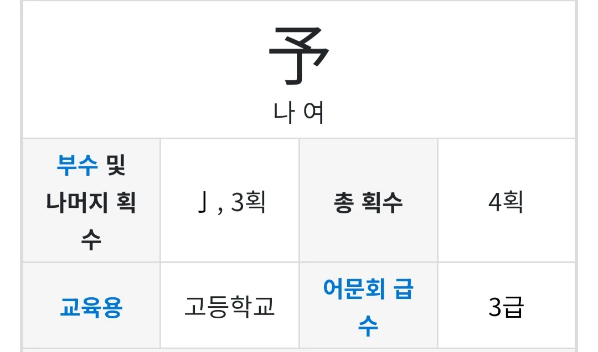

46 · 16 · 2 시간 전 · 원문

나여
수집 당시 댓글 16개
유아학교 · 3 시간 전
MCR · 3 시간 전
그 증거로 총 4개의 어묵이 합쳐진 형상을 띄고 있음
↳ 답글 · 미츠루기 · 3 시간 전
미친….!!
망고레 · 3 시간 전
이게 굉장히 높히는 말이라 왕 정도만 썼음사대부도 못써서 대신 '이 사람'을 주로 씀
↳ 답글 · 깁기 · 3 시간 전
여 호와
↳ 답글 · 빗방울 · 2 시간 전
고대인 시경, 서경, 논어 레벨로 가면 ㄹㅇ 흔하게 나오고 여말선초 문집에서도 보이는데 조선 중후기로 가면 사서삼경 인용할 때 빼곤 거의 멸종되는 듯
↳ 답글 · 식빵굽는비둘기 · 44 분 전
오 이게 그거구나여가 어쩌구 저쩌구 할 것이다
네다찐 · 3 시간 전
여~ 히사시부리
네이버페이 · 3 시간 전
여, 히사시부리
GugugagaDoro · 2 시간 전
予 나 여汝 너 여여~ 히사시부리~
애들자요 · 2 시간 전
덧셈 빽셈
데바투사쑬라 · 2 시간 전
일본에서는 이거 우리 한자 아니에유 하고 전혀 다른 뜻인 미리 예 자를 대체해서 쓰고 있음
해으응 · 2 시간 전
라여~
나아파치킨사줘 · 1 시간 전
대민성과장증후군 · 1 시간 전
예약의 예
김주애사진보면발기됨 · 1 시간 전
사극 말투에서 여봐라~ 여보게~ 하던 게 저 한자에서 온 거였을까
댓글
수집 당시 댓글 16개
유아학교 · 3 시간 전
MCR · 3 시간 전
그 증거로 총 4개의 어묵이 합쳐진 형상을 띄고 있음
· 미츠루기 · 3 시간 전
미친….!!
망고레 · 3 시간 전
이게 굉장히 높히는 말이라 왕 정도만 썼음
사대부도 못써서 대신 '이 사람'을 주로 씀
· 깁기 · 3 시간 전
여 호와
· 빗방울 · 2 시간 전
고대인 시경, 서경, 논어 레벨로 가면 ㄹㅇ 흔하게 나오고 여말선초 문집에서도 보이는데 조선 중후기로 가면 사서삼경 인용할 때 빼곤 거의 멸종되는 듯
· 식빵굽는비둘기 · 44 분 전
오 이게 그거구나
여가 어쩌구 저쩌구 할 것이다
네다찐 · 3 시간 전
여~ 히사시부리
네이버페이 · 3 시간 전
여, 히사시부리
GugugagaDoro · 2 시간 전
予 나 여
汝 너 여
여~ 히사시부리~
애들자요 · 2 시간 전
덧셈 빽셈
데바투사쑬라 · 2 시간 전
일본에서는 이거 우리 한자 아니에유 하고 전혀 다른 뜻인 미리 예 자를 대체해서 쓰고 있음
해으응 · 2 시간 전
라여~
나아파치킨사줘 · 1 시간 전
대민성과장증후군 · 1 시간 전
예약의 예
김주애사진보면발기됨 · 1 시간 전
사극 말투에서 여봐라~ 여보게~ 하던 게 저 한자에서 온 거였을까